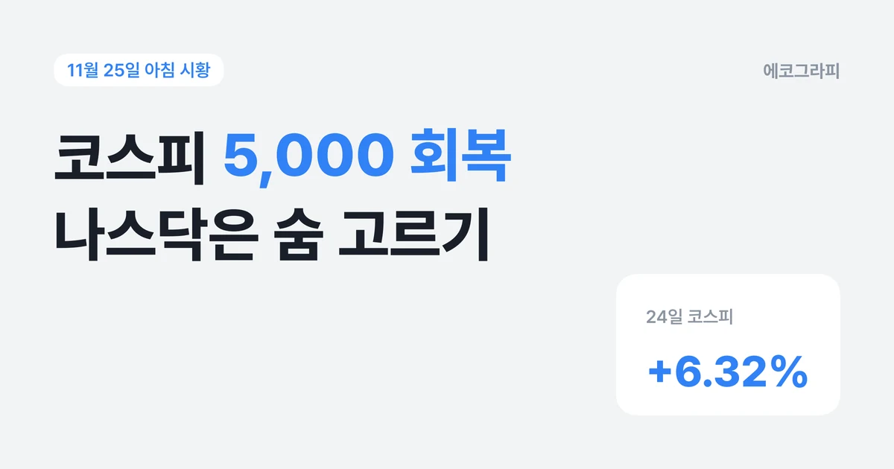
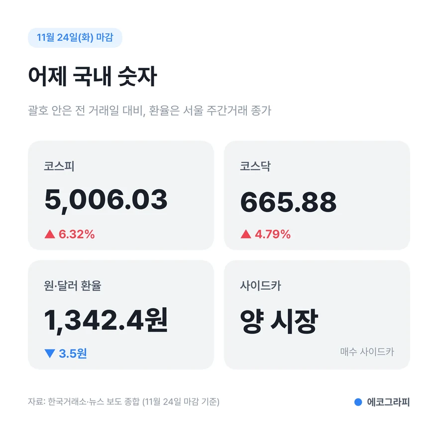
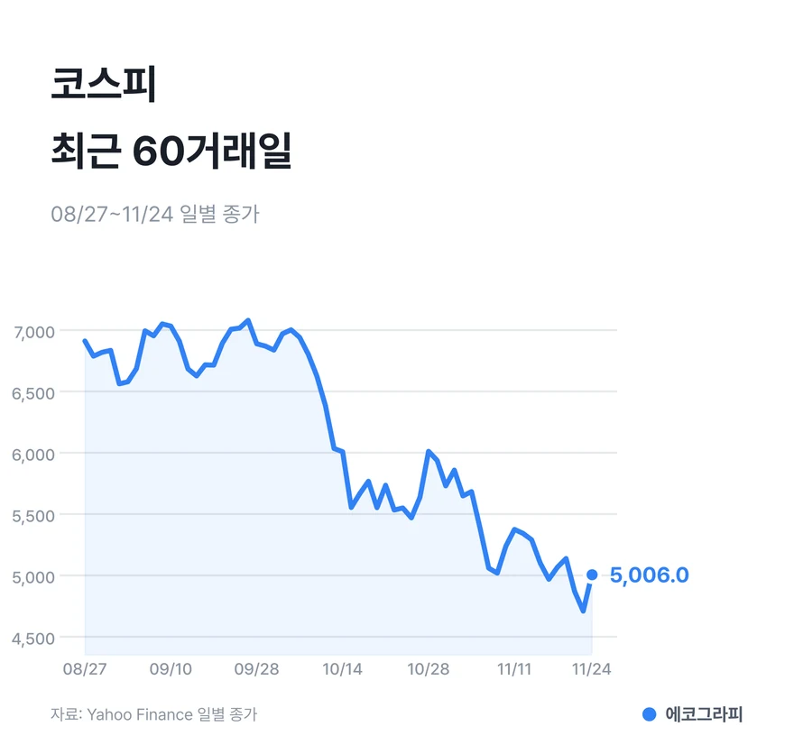
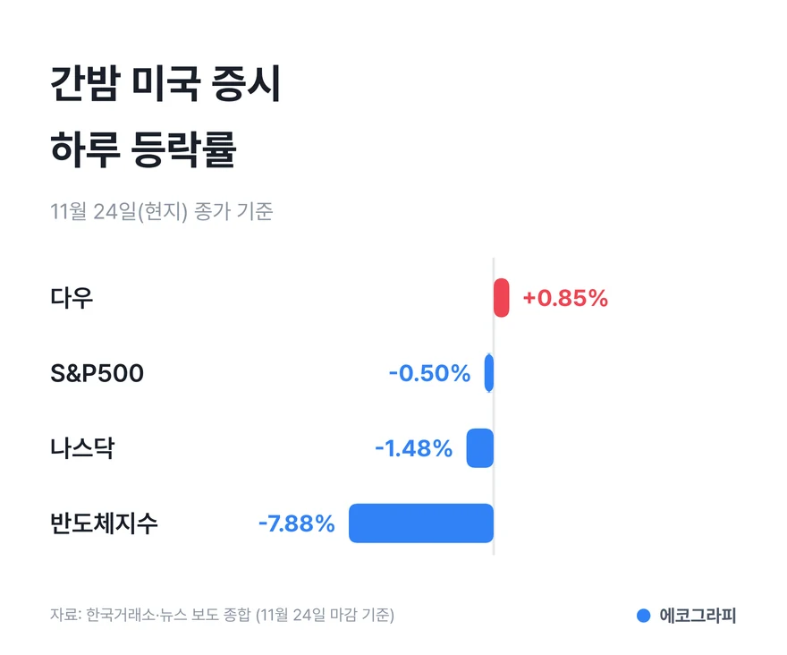
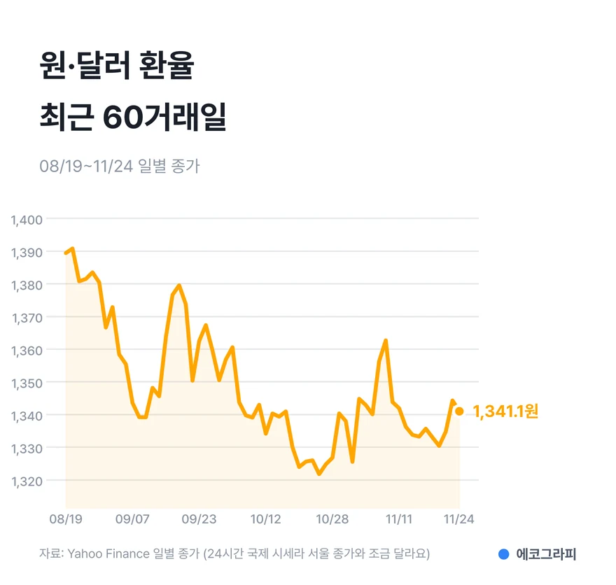
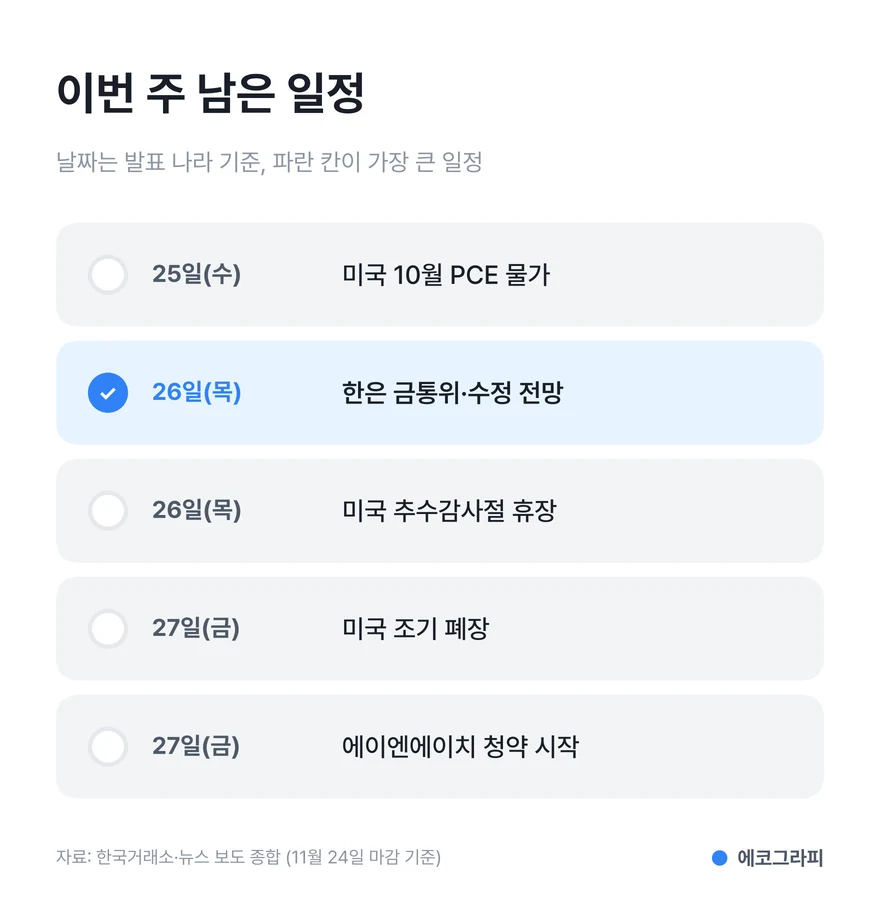

24일(화) 코스피는 하루 297.49포인트(6.32%) 오른 5,006.03으로 마감했어요. 장중엔 5,065.74(+7.59%)까지 올랐다가 상승 폭을 조금 줄였어요. 코스닥은 4.79% 오른 665.88이에요. 원·달러 환율 서울 종가는 3.5원 내린 1,342.4원으로, 사흘 만에 내려왔어요.

장 시작 6분 만에 코스피, 이어서 코스닥에도 매수 사이드카가 걸렸어요. 지난 금요일과 월요일엔 '팔자' 사이드카였는데 방향이 정반대로 바뀐 거예요. 코스피에서 외국인은 7천억 원대를 사들이며 매도 행진을 멈췄고 기관도 순매수했어요. 개인은 2조 원 넘게 팔았어요(매체마다 집계 금액이 조금 달라 규모만 적었어요). 하루 흐름은 어제 저녁 속보 글에 정리했어요.

60거래일로 보면 이틀 동안 8% 넘게 빠졌던 몫의 70% 가까이를 하루 만에 되돌린 모양이에요. 다만 9월 말 고점과는 아직 거리가 있어요.
같은 날 코스닥에 상장한 엠비디는 공모가(7,000원)보다 39.6% 낮은 4,230원에 첫날을 마쳤어요. 지수가 크게 오른 날에도 신규 상장주는 따로 움직일 수 있다는 걸 보여 줬어요. 자세한 숫자는 엠비디 상장일 글에 있어요.
24일(현지) 뉴욕 증시는 엇갈렸어요. 다우는 0.85% 오른 50,018.70, S&P500은 0.50% 내린 7,201.09, 나스닥은 1.48% 내린 23,733.54로 마감했어요. 필라델피아 반도체지수는 7.88% 빠졌어요.

전날 6% 넘게 뛰었던 나스닥이 하루 만에 일부를 돌려준 셈이에요. 엔비디아(-5.86%), 마이크론(약 -11%), AMD(약 -9%) 같은 반도체주가 많이 내렸고, 머크·암젠·나이키처럼 반도체와 거리가 먼 종목은 크게 올라 다우를 끌어올렸어요.
'페드워치'가 뭔지, 확률은 어떻게 나오는지는 오늘의 경제 용어 페드워치 글에 정리했어요.

원·달러 환율은 1,340원대에서 오르내리고 있어요. 미국이 금리를 올리면 달러가 강해지기 쉬워서, 다음 달까지 환율도 함께 볼 필요가 있어요.

오늘 국내 장은 간밤 반도체주 약세를 먼저 반영할 가능성이 있어요. 이번 주 전체 일정은 월요일 주간 일정 글에 있어요.
오늘 해볼 것: 하루에 6% 오르고 다음 날 반대로 흔들리는 장에서는 뉴스 한 줄에 따라 주문하기 쉬워요. 내 계좌에서 한 종목·한 업종 비중이 너무 크지 않은지 먼저 확인해 보세요.
꼭 그렇지는 않아요. 국내 반도체주는 어제 이미 크게 올랐고, 업황·환율·수급이 함께 영향을 줘요. 방향은 참고하되 폭은 다를 수 있어요.
선물 가격이 급하게 올랐다는 뜻일 뿐이에요. 프로그램 매매를 5분 멈추는 장치라 시장 방향을 정하지는 않아요.
보통 달러가 강해지고 외국인 자금이 빠져나갈 수 있어 부담이 돼요. 다만 이미 시장 가격에 많이 반영됐다면 실제 발표 때 영향은 작을 수도 있어요.
다우는 30개 종목만 담는데, 어제는 반도체 비중이 큰 나스닥과 달리 제약·소비재 종목이 크게 올랐어요. 지수마다 담은 종목이 달라 방향이 갈릴 수 있어요.
※ 2026년 11월 기준으로 정리한 글입니다. 세율·제도는 바뀔 수 있으니 거래 전 증권사·국세청 안내를 한 번 더 확인하세요. 특정 종목·상품의 매수·매도 권유가 아닙니다.